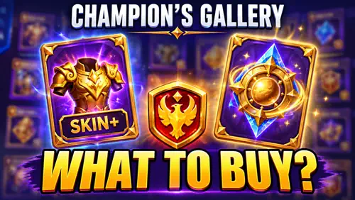
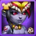
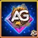

Champion's Gallery features Kendle as the main Hero of this Ascendant Glory season, together with her new Inner Demons Skin+. This is an unusually important shop for players who do not own Kendle, but the 300,000-Crest Skin+ creates a very different decision for F2P players, medium spenders, and whales.

Ascendant Glory Guides
 Event Group Overview
Event Group Overview Rising Legend
Rising Legend Trial of Legends
Trial of Legends Spark of Glory
Spark of GloryThe Short Version
New player without Kendle: collect every Kendle Soul Stone available from the event missions, because her Soul Stones are not sold in Champion's Gallery. F2P: secure the 90,000-Crest base Inner Demons Skin, then prioritize rare books, available Hero Soul Stones, and Skin Stones. Medium spender: compare Kendle's 300,000-Crest Skin+ with Aidan's much more accessible 80,000-Emerald Blazing Skin+ path. Whale or Kendle main: Inner Demons Skin+ becomes a serious priority because targeted access disappears after the event.
How to Get Kendle Soul Stones During the Event
Kendle Soul Stones cannot be purchased in Champion's Gallery. Some are available from other missions in the Ascendant Glory event, so beginners who do not own her should claim every mission reward that includes her Soul Stones. Kendle also cannot be farmed in Campaign and is not sold in a permanent shop; outside special events, the Heroic Chest is the main alternative and is completely random.
If the event missions provide enough stones to unlock or evolve Kendle, use them before planning any long-term investment. Later, read the Evolution Booster guide to understand how the book can help with five- and six-star evolution while returning unused resources.
Alexandre's Recommendation
Collect all Kendle Soul Stones offered by the missions, but do not reserve Ascension Crests expecting to find more in the shop. Champion's Gallery spending should begin with the base skin or another item that is actually available for purchase.
Second Priority: Kendle's Inner Demons Skin and Skin+
Read my complete Kendle guide and skin analysis before buying. Inner Demons provides Crushing, increasing Kendle's finishing damage against enemies below 50% Health. It is valuable because Kendle continues to grow in the current meta, but its value still depends on whether she belongs in one of your real teams.
The acquisition path changed drastically this season. Completing event missions lets you buy the base Inner Demons Skin for 90,000 Ascension Crests. Once the base skin is owned, the Inner Demons Skin+ costs another 300,000 Ascension Crests.
For F2P players, the base skin is the minimum target worth considering. Getting it now avoids a future cost of approximately 5,000 Skin Stones or one Skin Certificate after the waiting period. If Kendle is not in your main team and you cannot afford the Skin+, stop at the base version and redirect the remaining Crests toward rarer shop items.
If Kendle is central to your team, waiting has a major disadvantage. The Skin+ is expected to enter the Heroic Chest after roughly five months, where it competes with many other Skin+ rewards. Invoking a random Skin+ requires 400 Heroic Chests, so free daily and advertisement openings do not guarantee that Kendle will be selected.
“Free” Does Not Mean Accessible
The Skin+ does not have a direct cash price, but the 300,000-Crest requirement creates a substantial resource paywall. The base skin is realistically accessible to F2P players; the Skin+ is mainly aimed at Kendle mains and whales who can complete the expensive event paths.
Kendle Skin+ or Aidan Blazing Skin+?
Spending 80,000 Emeralds in the event's Emerald-spending mission awards Aidan's Blazing Skin and Blazing Skin+, which strengthen his Health. In my opinion, Aidan is currently the more established meta Hero. Kendle is becoming stronger with every update, while Aidan has remained relevant for a long time and has not even received his Relic Skills yet.
| Skin Path | Requirement | Best Fit | Alexandre's View |
|---|---|---|---|
| 90,000 Crests for the base skin, then 300,000 Crests for Skin+ | Kendle mains and whales | Powerful and hard to target later, but blocked by an enormous Crest requirement. | |
 Aidan Blazing Skin and Skin+ (Health) | Reach the 80,000-Emerald mission target | Medium spenders already planning Emerald use | More accessible, and Aidan is already an established meta Hero with future Relic potential. |
Do not spend 80,000 Emeralds only because the reward exists. But if those Emeralds are already part of your plan, Aidan's complete skin path provides a stronger medium-spender proposition than forcing 300,000 Ascension Crests exclusively for Kendle's Skin+.
Alexandre's Outland Chest Strategy
Outland Chests do more than advance the event. They also provide Skin Stones, skins, Skin Certificates, and Outland Shop Coins, making the discounted chest opening one of the strongest Emerald uses in both the event and the wider game.
The following planning estimates show the scale required to approach the 300,000-Crest Skin+ target. Use the Friday, Saturday, and Sunday 55% Outland discount whenever possible.
| Outland Chests | Emerald Cost | Estimated Ascension Crests | Target |
|---|---|---|---|
| 100 | 3,375 | First discounted batch | |
| 2,370 | 79,987 | Near the 80,000-Emerald Aidan Skin+ target | |
| 6,100 | 205,875 | Close to Kendle's 300,000-Crest Skin+ price | |
| 6,186 | 208,778 | Estimated Kendle Skin+ target reached | |
| Planning estimates by Alexandre. Actual costs can vary with free chests, completed repeatable cycles, and other event missions. | |||
Best Priorities If You Cannot Reach 300,000 Crests
F2P and low-spender accounts should not destroy months of saved resources trying to cross a whale-level threshold. The shop still contains valuable targets after the base Kendle skin.
- Crow's Laws Codex and Kendle's Torture Secrets: these Hero book artifact fragments are extremely high priorities. Kendle strengthens Chaos teams, while Crow can enter many compositions designed to fight high-damage mages.
- Crow, Kayla, and Aidan Soul Stones: invest if you have not unlocked or evolved these Heroes. Crow has the highest immediate scarcity because the Evolution Booster currently cannot replace his missing Soul Stones.
- Skin Stones: every new skin creates another expensive leveling requirement, so this resource always retains practical value.
Dante, Kai, and Arachne Relic Shards have lower shop priority because their relics can be obtained from the free Relic Chests awarded by the weekly Guild VS event. Maya's relic is mainly relevant to advanced, high-level battle plans; for most low spenders, that investment delays stronger and more versatile Heroes.
Read the Relic guide before spending rare event currency on shards that can enter your account through weekly rewards.
What I Would Avoid Buying
Kendle Soul Stones are not part of this shop, so do not include them in your Crest budget. Miu Soul Stones, lower-priority artifact fragments, and Hero equipment fall behind the featured skins, high-priority book artifacts, scarce Crow/Kayla/Aidan Soul Stones, and Skin Stones.
Equipment is the easiest skip. Farming equipment through Energy also provides Gold, account experience, and progress in Energy-spending missions. Buying the same equipment with rare Ascension Crests sacrifices all those additional benefits.
- Avoid equipment: farm it through Energy.
- Do not budget Crests for Kendle Soul Stones: they come from other event missions and are not sold here.
- Avoid Miu Soul Stones unless she belongs to a real team: scarcity alone does not make a Hero a priority.
- Avoid lower-priority artifacts: Crow's and Kendle's book artifacts are the exceptions in this rotation.
- Avoid relics obtainable from weekly Guild VS chests: do not replace a free acquisition path with premium event currency.
My Final Champion's Gallery Order
| Priority | Item | Who Should Buy It | Reason |
|---|---|---|---|
| 1 for F2P | F2P and low spenders using Kendle | Costs 90,000 Crests and saves a future Skin Certificate or 5,000 Skin Stones. | |
| 1 for Kendle mains | Whales and committed Kendle teams | Costs 300,000 Crests but becomes random and difficult to target later. | |
| 1 for planned Emerald spend | Aidan Blazing Skin+ | Medium spenders | Complete skin path at the 80,000-Emerald milestone for an established meta Hero. |
| 2 | Accounts using Crow | Rare, high-value book artifact for a flexible anti-mage Hero. | |
| 2 | Kendle and Chaos teams | One of the strongest artifact purchases in the rotation. | |
| 3 | Players missing these Heroes or evolution stars | Crow is currently the hardest of the three to evolve through alternative methods. | |
| 4 | Every account | A permanent bottleneck with constant demand from new skins. | |
| Low |  Dante, Kai, Arachne, and Maya Relic Shards | Only specialized teams | Several can come from weekly Guild VS Relic Chests; Maya mainly serves high-level plans. |
| Avoid | Most accounts | Farm equipment with Energy and reserve Ascension Crests for scarce rewards. |
Final Verdict
Kendle is becoming stronger and belongs in the current meta, but her 300,000-Crest Skin+ is not realistically accessible to every account. Aidan is already established and may improve further when his Relic Skills arrive, making his 80,000-Emerald reward path more attractive for medium spenders. F2P players should collect Kendle Soul Stones from the event missions, secure her base skin if it fits their plan, and spend the remaining Crests on rare artifacts, available Crow/Kayla/Aidan Soul Stones, and Skin Stones.
 Kendle Guide
Kendle Guide Crow Guide
Crow Guide Kayla Guide
Kayla Guide